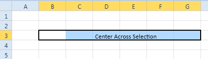

The following code snippets manually set the center across selection by calling the method:
|
C# SpreadsheetControl.GridProperties.CurrentExcelGridModel.setCenterAcrossSelection();
|
|
[VB] SpreadsheetControl.GridProperties.CurrentExcelGridModel.setCenterAcrossSelection()
|
The following code snippet manually sets the center across selection by calling the command:
|
[XAML] <Button Content="CentreAcrossSelection" Margin="5" Width="200" Command="{Binding ElementName=spreadSheetControl, Path=CenterAcrossSelectionCommand}"/>
|
The output displayed is shown in the following screenshot:

Figure 19: Output